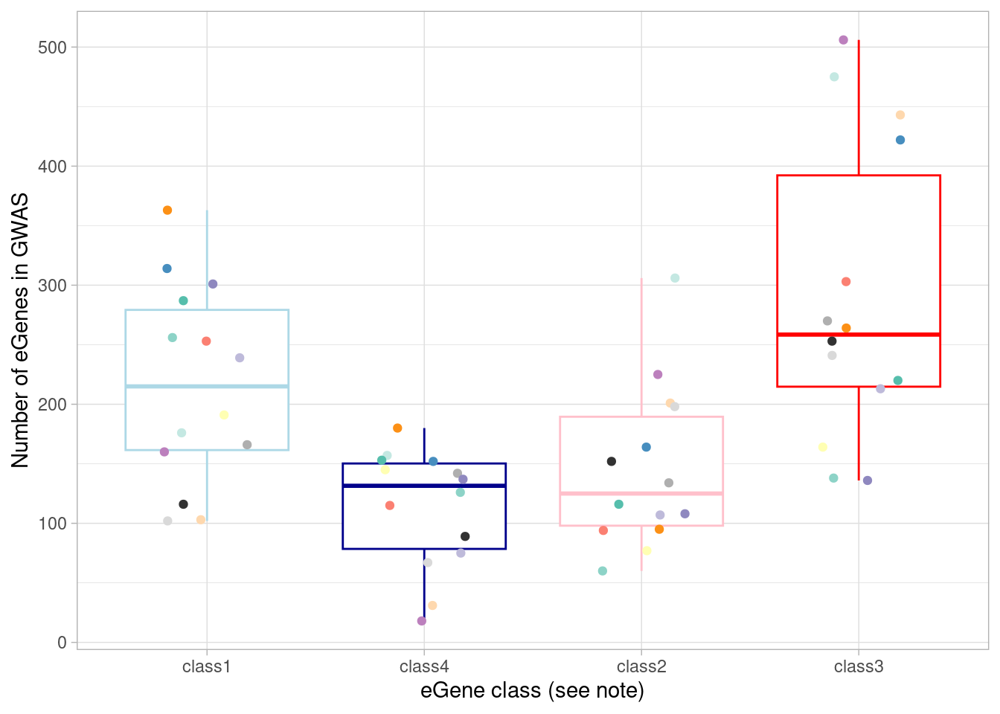
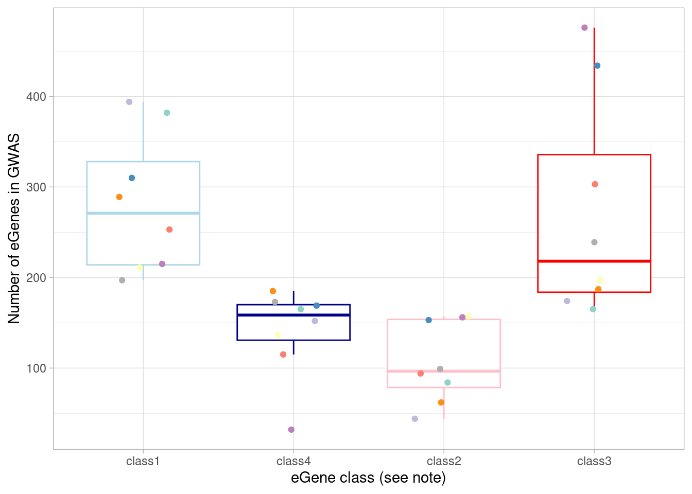
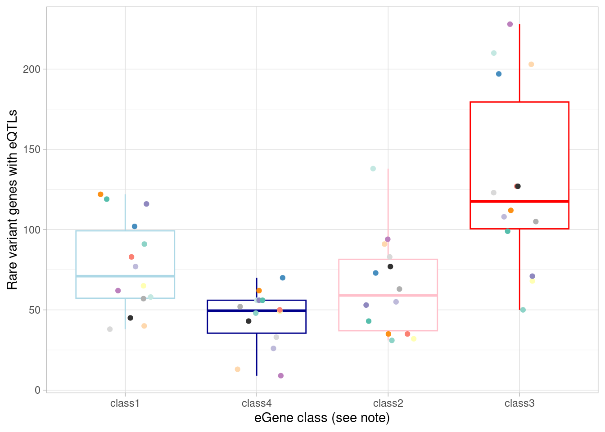
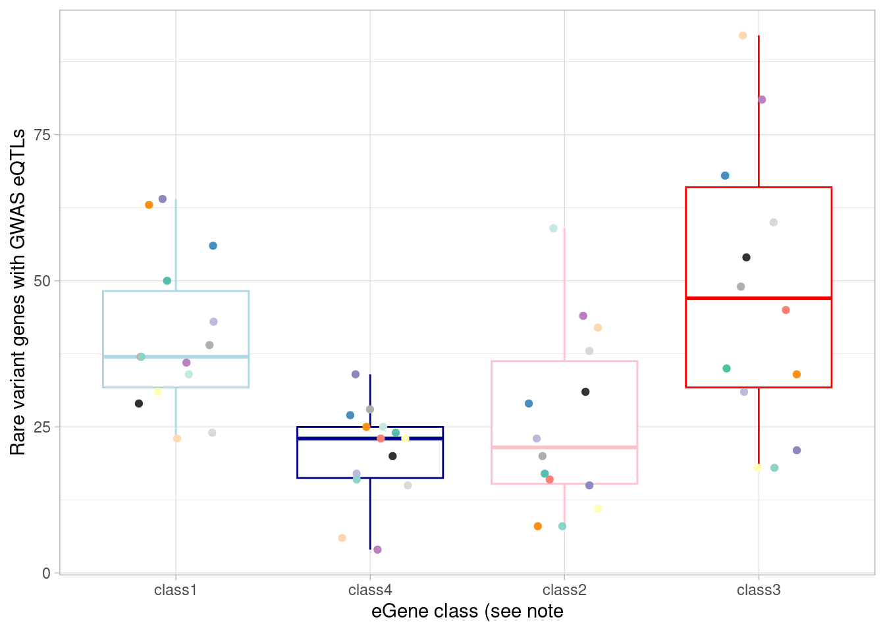
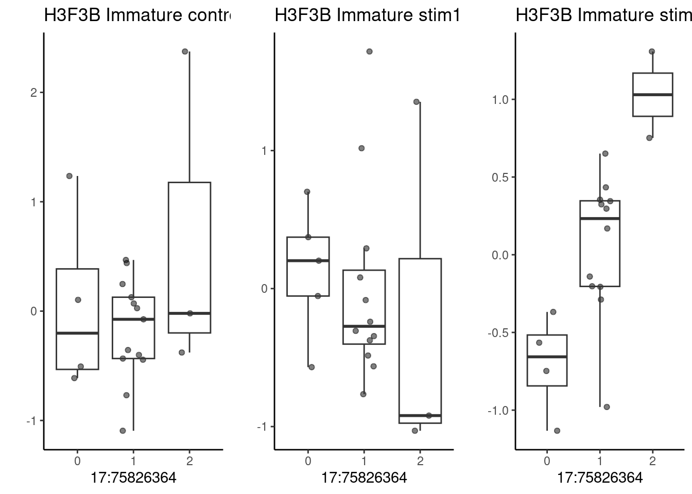
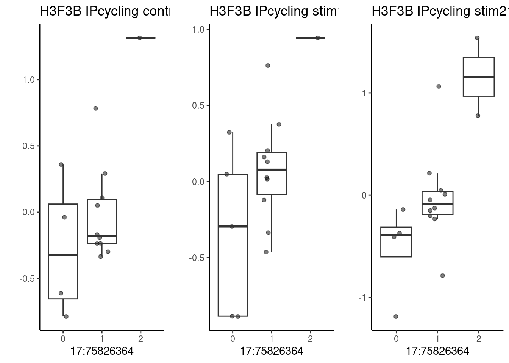
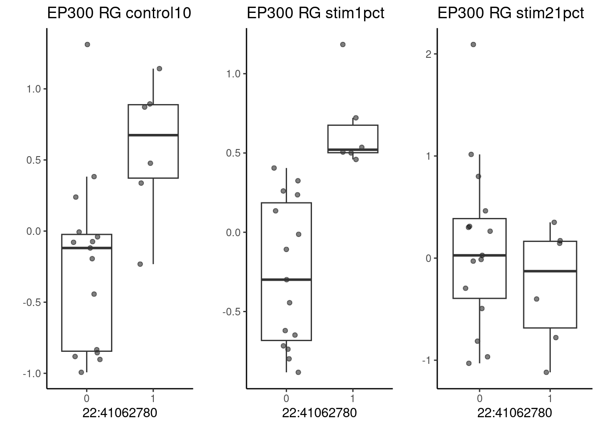
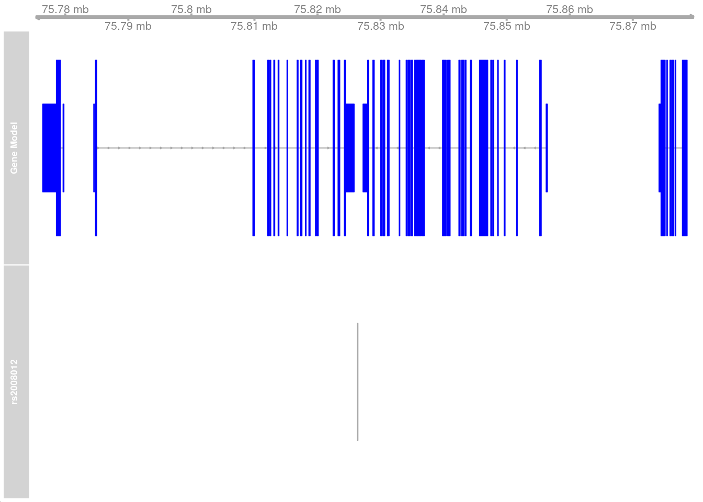
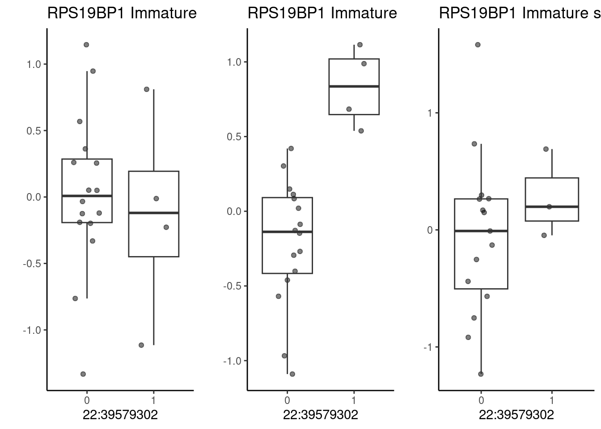
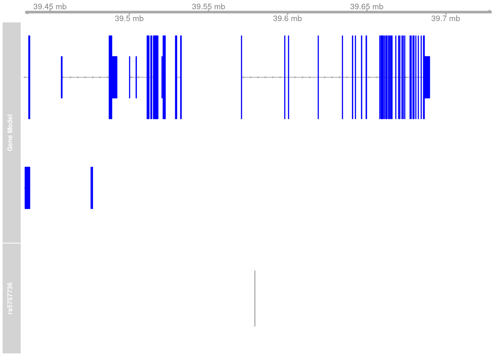

Last updated: 2024-09-03
Checks: 5 2
Knit directory: oxygen_eqtl/
This reproducible R Markdown analysis was created with workflowr (version 1.7.0). The Checks tab describes the reproducibility checks that were applied when the results were created. The Past versions tab lists the development history.
The R Markdown is untracked by Git. To know which version of the R
Markdown file created these results, you’ll want to first commit it to
the Git repo. If you’re still working on the analysis, you can ignore
this warning. When you’re finished, you can run
wflow_publish to commit the R Markdown file and build the
HTML.
Great job! The global environment was empty. Objects defined in the global environment can affect the analysis in your R Markdown file in unknown ways. For reproduciblity it’s best to always run the code in an empty environment.
The command set.seed(20220621) was run prior to running
the code in the R Markdown file. Setting a seed ensures that any results
that rely on randomness, e.g. subsampling or permutations, are
reproducible.
Great job! Recording the operating system, R version, and package versions is critical for reproducibility.
Nice! There were no cached chunks for this analysis, so you can be confident that you successfully produced the results during this run.
Using absolute paths to the files within your workflowr project makes it difficult for you and others to run your code on a different machine. Change the absolute path(s) below to the suggested relative path(s) to make your code more reproducible.
| absolute | relative |
|---|---|
| /project2/gilad/umans/oxygen_eqtl/topicqtl/outputs/topics15/all_genes_merged_fine_fasttopics_15_topics.cellregmap.sighits.tsv | topicqtl/outputs/topics15/all_genes_merged_fine_fasttopics_15_topics.cellregmap.sighits.tsv |
| /project2/gilad/umans/oxygen_eqtl/topicqtl/outputs/topics15/fasttopics_fine_15_topics. | topicqtl/outputs/topics15/fasttopics_fine_15_topics. |
| /project2/gilad/umans/oxygen_eqtl/topicqtl/pseudocell_loadings_k15.tsv | topicqtl/pseudocell_loadings_k15.tsv |
Great! You are using Git for version control. Tracking code development and connecting the code version to the results is critical for reproducibility.
Note that you need to be careful to ensure that all relevant files for
the analysis have been committed to Git prior to generating the results
(you can use wflow_publish or
wflow_git_commit). workflowr only checks the R Markdown
file, but you know if there are other scripts or data files that it
depends on. Below is the status of the Git repository when the results
were generated:
Untracked files:
Untracked: .DS_Store
Untracked: 18519_calling.Rmd
Untracked: TOM/
Untracked: _site.yml
Untracked: about.Rmd
Untracked: batch_variability.Rmd
Untracked: batch_variability.knit.md
Untracked: batch_variability.nb.html
Untracked: cache/
Untracked: cellregmap.Rmd
Untracked: celltype.Rmd
Untracked: celltype2.Rmd
Untracked: celltype2.nb.html
Untracked: construct_seurat.Rmd
Untracked: construct_seurat2.Rmd
Untracked: cormotif_eqtl.Rmd
Untracked: de.Rmd
Untracked: de2.Rmd
Untracked: de2.nb.html
Untracked: de_finalized.Rmd
Untracked: de_finalized_reharmonized.Rmd
Untracked: disease_gene_overlap.Rmd
Untracked: disease_gene_overlap_EE.Rmd
Untracked: disease_gene_overlap_EE_reharmonized.Rmd
Untracked: disease_gene_overlap_EE_reharmonized_fine.Rmd
Untracked: disease_gene_overlap_EE_reharmonized_fine_filter10.Rmd
Untracked: docs/
Untracked: figure1.Rmd
Untracked: figure2.Rmd
Untracked: figure3.Rmd
Untracked: figure4.Rmd
Untracked: figures_for_poster.R
Untracked: for_yunqi_mash.rmd
Untracked: gsea.Rmd
Untracked: gsea.nb.html
Untracked: gsea_reharmonized.Rmd
Untracked: hgwgcna.Rmd
Untracked: hgwgcna.nb.html
Untracked: hippo_eqtl.Rmd
Untracked: index.Rmd
Untracked: index_old.Rmd
Untracked: license.Rmd
Untracked: mash_EE.R
Untracked: mash_EE_PC.R
Untracked: mash_de.Rmd
Untracked: mash_for_peter.r
Untracked: matrixEQTL.Rmd
Untracked: matrixEQTL.nb.html
Untracked: matrixEQTL_reharmonized.Rmd
Untracked: ncell_permtesting.R
Untracked: plot_eqtl.Rmd
Untracked: prep_apex.Rmd
Untracked: qtltools.Rmd
Untracked: seurat.export.library1.h5Seurat
Untracked: shared_functions_style_items.R
Untracked: test.rmd
Untracked: topics.R
Untracked: topics.Rmd
Untracked: topics_all.R
Untracked: topics_pseudocell.R
Untracked: topicsde.R
Untracked: voxhunt.Rmd
Note that any generated files, e.g. HTML, png, CSS, etc., are not included in this status report because it is ok for generated content to have uncommitted changes.
There are no past versions. Publish this analysis with
wflow_publish() to start tracking its development.
This page describes steps used to compare eQTLs to disease gene results.
library(Seurat)Attaching SeuratObjectlibrary(tidyverse)── Attaching packages ─────────────────────────────────────── tidyverse 1.3.1 ──✔ ggplot2 3.4.4 ✔ purrr 1.0.2
✔ tibble 3.2.1 ✔ dplyr 1.1.4
✔ tidyr 1.3.0 ✔ stringr 1.5.0
✔ readr 2.1.4 ✔ forcats 0.5.1── Conflicts ────────────────────────────────────────── tidyverse_conflicts() ──
✖ dplyr::filter() masks stats::filter()
✖ dplyr::lag() masks stats::lag()library(pals)
library(RColorBrewer)
library(mashr)Loading required package: ashrlibrary(udr)
library(knitr)
library(ggrepel)
library(gridExtra)
Attaching package: 'gridExtra'The following object is masked from 'package:dplyr':
combinelibrary(MatrixEQTL)
library(vroom)
Attaching package: 'vroom'The following objects are masked from 'package:readr':
as.col_spec, col_character, col_date, col_datetime, col_double,
col_factor, col_guess, col_integer, col_logical, col_number,
col_skip, col_time, cols, cols_condense, cols_only, date_names,
date_names_lang, date_names_langs, default_locale, fwf_cols,
fwf_empty, fwf_positions, fwf_widths, locale, output_column,
problems, specsource("analysis/shared_functions_style_items.R")Import GWAS Catalog data and separate the mapped genes.
gwas <- read.delim(file = "/project/gilad/umans/references/gwas/gwas_catalog_v1.0.2-associations_e110_r2023-09-10.tsv", quote = "", fill = FALSE) %>%
dplyr::select(!c("DATE.ADDED.TO.CATALOG", "PUBMEDID" ,"FIRST.AUTHOR", "DATE", "JOURNAL","LINK", "STUDY", "INITIAL.SAMPLE.SIZE", "REPLICATION.SAMPLE.SIZE", "PLATFORM..SNPS.PASSING.QC.", "P.VALUE..TEXT.", "X95..CI..TEXT.", "GENOTYPING.TECHNOLOGY", "MAPPED_TRAIT_URI"))
gwas_formatted <- gwas %>%
mutate(MAPPED_GENE=if_else(str_detect(MAPPED_GENE, pattern = "No mapped genes"), "", MAPPED_GENE)) %>%
rowwise() %>%
mutate(gene=strsplit(MAPPED_GENE, split="[ - ]")[[1]][1], upstream_gene=strsplit(MAPPED_GENE, split=" - ")[[1]][1], downstream_gene=strsplit(MAPPED_GENE, split=" - ")[[1]][2]) %>%
mutate(nearest_gene= case_when(UPSTREAM_GENE_DISTANCE<DOWNSTREAM_GENE_DISTANCE ~ upstream_gene,
UPSTREAM_GENE_DISTANCE>DOWNSTREAM_GENE_DISTANCE ~ downstream_gene,
is.na(UPSTREAM_GENE_DISTANCE)|is.na(DOWNSTREAM_GENE_DISTANCE) ~ gene)) %>%
mutate(nearest_gene=gsub("([a-zA-Z]),", "\\1 ", nearest_gene)) %>%
mutate(nearest_gene=gsub(",", "", nearest_gene)) %>%
mutate(nearest_gene=str_trim(nearest_gene)) %>%
mutate(trait=strsplit(DISEASE.TRAIT, split=", ")[[1]][1]) %>%
add_count(trait) %>%
ungroup()gwas_formatted <- readRDS(file = "/project/gilad/umans/references/gwas/gwas_catalog_v1.0.2-associations_e110_r2023-09-10.RDS")In cases where the GWAS reported a gene for a given SNP, use the reported gene. Otherwise, assign the nearest gene as the one that corresponds to the associated SNP.
gwas_formatted <- gwas_formatted %>%
mutate(`REPORTED.GENE.S.`=if_else(str_detect(`REPORTED.GENE.S.`, pattern = "NR"), NA, `REPORTED.GENE.S.`)) %>%
mutate(`REPORTED.GENE.S.`=if_else(str_detect(`REPORTED.GENE.S.`, pattern = "intergenic"), NA, `REPORTED.GENE.S.`)) %>%
mutate(`REPORTED.GENE.S.`= na_if(`REPORTED.GENE.S.`, "")) %>%
mutate(nearest_gene= case_when(!is.na(`REPORTED.GENE.S.`) ~ `REPORTED.GENE.S.`,
UPSTREAM_GENE_DISTANCE<DOWNSTREAM_GENE_DISTANCE ~ upstream_gene,
UPSTREAM_GENE_DISTANCE>DOWNSTREAM_GENE_DISTANCE ~ downstream_gene,
is.na(UPSTREAM_GENE_DISTANCE)|is.na(DOWNSTREAM_GENE_DISTANCE) ~ gene
)) %>%
mutate(nearest_gene=str_extract(nearest_gene, "[^, ]+")) %>%
mutate(nearest_gene=gsub(",", "", nearest_gene)) %>%
mutate(nearest_gene=str_trim(nearest_gene)) I next curated traits that were reasonably brain-related. This includes addiction-related traits, but not dietary preference traits.
filtered_traits <- read_csv(file = "/project/gilad/umans/references/gwas/gwas_catalog_v1.0.2-associations_e110_r2023-09-10_organoid-related_n15.csv", col_names = FALSE) %>% pull(X1)Rows: 512 Columns: 1
── Column specification ────────────────────────────────────────────────────────
Delimiter: ","
chr (1): X1
ℹ Use `spec()` to retrieve the full column specification for this data.
ℹ Specify the column types or set `show_col_types = FALSE` to quiet this message.I next exclude traits with fewer than 15 associations or more than 500 associations, and further filter consider only genome-wide significant associations.
gwas_gene_lists <- split(gwas_formatted %>% filter(trait %in% filtered_traits) %>% filter(n>15) %>% filter(n<500) %>% filter(PVALUE_MLOG>7.3) %>% pull(nearest_gene), gwas_formatted %>% filter(trait %in% filtered_traits) %>% filter(n>15) %>% filter(n<500) %>% filter(PVALUE_MLOG>7.3) %>% pull(trait))gwas_snps <- gwas_formatted %>% filter(trait %in% filtered_traits) %>% filter(n>15) %>% filter(n<500) %>%
filter(PVALUE_MLOG>7.3) %>% unite("snp", CHR_ID:CHR_POS, sep = ":") %>% pull(snp) %>% unique()Note that for some common traits there are many GWAS studies:
gwas_formatted %>%
filter(trait %in% filtered_traits) %>%
filter(n>15) %>% filter(n<500) %>% filter(PVALUE_MLOG>7.3) %>%
select(STUDY.ACCESSION, trait) %>% distinct() %>% group_by(trait) %>% summarize(studies=n()) %>%
arrange(desc(studies)) %>% head()# A tibble: 6 × 2
trait studies
<chr> <int>
1 Alzheimer's disease 35
2 Parkinson's disease 24
3 Bipolar disorder 18
4 Amyotrophic lateral sclerosis 15
5 Major depressive disorder 14
6 Alzheimer's disease (late onset) 12And, of course, there are a number of very similar traits in this large compendium.
Next, I import significant eGenes from GTEx cerebral cortex tissue samples.
gtex_cortex_signif <- read.table(file = "/project/gilad/umans/references/gtex/GTEx_Analysis_v8_eQTL/Brain_Cortex.v8.egenes.txt.gz", header = TRUE, sep = "\t", stringsAsFactors = FALSE) %>% filter(qval<0.05) %>% pull(gene_name)
gtex_frontalcortex_signif <- read.table(file = "/project/gilad/umans/references/gtex/GTEx_Analysis_v8_eQTL/Brain_Frontal_Cortex_BA9.v8.egenes.txt.gz", header = TRUE, sep = "\t", stringsAsFactors = FALSE) %>% filter(qval<0.05) %>% pull(gene_name)
gtex_cortex_signif <- unique(c(gtex_cortex_signif, gtex_frontalcortex_signif))And import the eQTL results.
mash_by_condition_output <- readRDS(file = "output/combined_mash-by-condition_EE_fine_reharmonized_032024.rds") %>% ungroup() I classified eGenes from the organoid dataset by whether they were significant under normoxia and whether they are responsive to manipulating oxygen. These two binary classifications result in 4 groups: (1) shared effects in all conditions, detectable under normoxia; (2) dynamic and detectable under normoxia; (3) dynamic and not detectable under normoxia; and (4) shared effects under all conditions but not detectable under normoxia. Implicitly, group 4 effects needed additional treatment conditions to detect them not because they’re responsive to treatment but because of the additional power we get.
Here, I plot the number of eGenes of each these four classes that are the nearest genes to a significant GWAS variant in each cell type.
mash_by_condition_output %>%
filter(sig_anywhere) %>%
mutate(class=case_when(control10_lfsr < 0.05 & allsharing ~ "class1",
control10_lfsr < 0.05 & !allsharing ~ "class2",
sig_anywhere & control10_lfsr > 0.05 & !allsharing ~ "class3",
sig_anywhere & allsharing ~ "class4")) %>%
group_by(source, class) %>%
summarise(egene_gwas = sum(gene %in% (unlist(gwas_gene_lists) %>% unique()))) %>%
ggplot(aes(x=factor(class, levels = c("class1", "class4", "class2", "class3")), y=egene_gwas)) + geom_boxplot(outlier.shape = NA, aes(color=class)) +
xlab("eGene class (see note)") +
ylab("Number of eGenes in GWAS") +
theme_light() +
geom_point(aes(group=source, color=source), position = position_jitter(width = 0.2, height = 0)) +
scale_color_manual(values=c(manual_palette_fine, class_colors)) +
xlab("eGene class (see note)") +
theme(legend.position="none")`summarise()` has grouped output by 'source'. You can override using the
`.groups` argument. Here, I show the numbers plotted above and perform a Wilcoxon test comparing the dynamic/not-detected-in-normoxia (“class3”) GWAS-associated eGenes with the non-dynamic/detected-in-normoxia (“class1”) GWAS-associated eGenes.
mash_by_condition_output %>%
filter(sig_anywhere) %>%
mutate(class=case_when(control10_lfsr < 0.05 & allsharing ~ "class1",
control10_lfsr < 0.05 & !allsharing ~ "class2",
sig_anywhere & control10_lfsr > 0.05 & !allsharing ~ "class3",
sig_anywhere & allsharing ~ "class4")) %>%
group_by(source, class) %>%
summarise(egene_gwas = sum(gene %in% (unlist(gwas_gene_lists) %>% unique()))) %>%
group_by(class) %>%
summarize(median(egene_gwas)) %>% kable()`summarise()` has grouped output by 'source'. You can override using the
`.groups` argument.| class | median(egene_gwas) |
|---|---|
| class1 | 215.0 |
| class2 | 125.0 |
| class3 | 258.5 |
| class4 | 131.5 |
wilcox.test(mash_by_condition_output %>%
filter(sig_anywhere) %>%
mutate(class=case_when(control10_lfsr < 0.05 & allsharing ~ "class1",
control10_lfsr < 0.05 & !allsharing ~ "class2",
sig_anywhere & control10_lfsr > 0.05 & !allsharing ~ "class3",
sig_anywhere & allsharing ~ "class4")) %>%
group_by(source, class) %>%
summarise(egene_gwas = sum(gene %in% (unlist(gwas_gene_lists) %>% unique()))) %>%
pivot_wider(names_from = class, values_from = egene_gwas) %>% pull(class1),
mash_by_condition_output %>%
filter(sig_anywhere) %>%
mutate(class=case_when(control10_lfsr < 0.05 & allsharing ~ "class1",
control10_lfsr < 0.05 & !allsharing ~ "class2",
sig_anywhere & control10_lfsr > 0.05 & !allsharing ~ "class3",
sig_anywhere & allsharing ~ "class4")) %>%
group_by(source, class) %>%
summarise(egene_gwas = sum(gene %in% (unlist(gwas_gene_lists) %>% unique()))) %>%
pivot_wider(names_from = class, values_from = egene_gwas) %>% pull(class3),
paired = TRUE)`summarise()` has grouped output by 'source'. You can override using the
`.groups` argument.
`summarise()` has grouped output by 'source'. You can override using the
`.groups` argument.
Wilcoxon signed rank exact test
data: mash_by_condition_output %>% filter(sig_anywhere) %>% mutate(class = case_when(control10_lfsr < 0.05 & allsharing ~ "class1", control10_lfsr < 0.05 & !allsharing ~ "class2", sig_anywhere & control10_lfsr > 0.05 & !allsharing ~ "class3", sig_anywhere & allsharing ~ "class4")) %>% group_by(source, class) %>% summarise(egene_gwas = sum(gene %in% (unlist(gwas_gene_lists) %>% unique()))) %>% pivot_wider(names_from = class, values_from = egene_gwas) %>% pull(class1) and mash_by_condition_output %>% filter(sig_anywhere) %>% mutate(class = case_when(control10_lfsr < 0.05 & allsharing ~ "class1", control10_lfsr < 0.05 & !allsharing ~ "class2", sig_anywhere & control10_lfsr > 0.05 & !allsharing ~ "class3", sig_anywhere & allsharing ~ "class4")) %>% group_by(source, class) %>% summarise(egene_gwas = sum(gene %in% (unlist(gwas_gene_lists) %>% unique()))) %>% pivot_wider(names_from = class, values_from = egene_gwas) %>% pull(class3)
V = 31, p-value = 0.1937
alternative hypothesis: true location shift is not equal to 0Overall (ie, not per-cell type):
mash_by_condition_output %>%
filter(sig_anywhere) %>%
mutate(class=case_when(control10_lfsr < 0.05 & allsharing ~ "class1",
control10_lfsr < 0.05 & !allsharing ~ "class2",
sig_anywhere & control10_lfsr > 0.05 & !allsharing ~ "class3",
sig_anywhere & allsharing ~ "class4")) %>%
select(gene, class) %>%
distinct() %>%
group_by(class) %>%
summarise(egene_gwas = sum(gene %in% (unlist(gwas_gene_lists) %>% unique()))) %>%
kable()| class | egene_gwas |
|---|---|
| class1 | 1411 |
| class2 | 1242 |
| class3 | 1745 |
| class4 | 1091 |
The same numbers can be calculated excluding genes that have already been identified as eGenes in GTEx cerebral cortex tissue.
mash_by_condition_output %>%
filter(sig_anywhere) %>%
filter(gene %not_in% gtex_cortex_signif) %>%
mutate(class=case_when(control10_lfsr < 0.05 & allsharing ~ "class1",
control10_lfsr < 0.05 & !allsharing ~ "class2",
sig_anywhere & control10_lfsr > 0.05 & !allsharing ~ "class3",
sig_anywhere & allsharing ~ "class4")) %>%
group_by(source, class) %>%
summarise(egene_gwas = sum(gene %in% (unlist(gwas_gene_lists) %>% unique()))) %>%
group_by(class) %>%
summarize(median(egene_gwas))`summarise()` has grouped output by 'source'. You can override using the
`.groups` argument.# A tibble: 4 × 2
class `median(egene_gwas)`
<chr> <dbl>
1 class1 130.
2 class2 73.5
3 class3 158.
4 class4 75 Overall (ie, not per-cell type):
mash_by_condition_output %>%
filter(sig_anywhere) %>%
filter(gene %not_in% gtex_cortex_signif) %>%
mutate(class=case_when(control10_lfsr < 0.05 & allsharing ~ "class1",
control10_lfsr < 0.05 & !allsharing ~ "class2",
sig_anywhere & control10_lfsr > 0.05 & !allsharing ~ "class3",
sig_anywhere & allsharing ~ "class4")) %>%
select(gene, class) %>%
distinct() %>%
group_by(class) %>%
summarise(egene_gwas = sum(gene %in% (unlist(gwas_gene_lists) %>% unique()))) %>%
kable()| class | egene_gwas |
|---|---|
| class1 | 825 |
| class2 | 747 |
| class3 | 1014 |
| class4 | 634 |
To test whether the “dynamic” vs “standard” eGenes (defined solely by comparisons of effect size) are more likely to be present in GWAS gene lists, we group and test them as we did for comparison to GTEx. Note this yields a similar conclusion as above, where we broke eGenes down by whether they were dynamic and detectable at baseline.
wilcox.test(mash_by_condition_output %>%
filter(sig_anywhere) %>%
mutate(class=case_when(allsharing ~ "standard",
hypoxia_normoxia_shared & sharing_contexts==1 ~ "dynamic",
hyperoxia_normoxia_shared & sharing_contexts==1 ~ "dynamic",
hypoxia_hyperoxia_shared & sharing_contexts==1 ~ "dynamic",
sharing_contexts==2 ~ "standard",
sharing_contexts==0 ~ "dynamic"
)) %>%
group_by(source, class) %>%
summarise(egene_gwas = sum(gene %in% (unlist(gwas_gene_lists) %>% unique()))) %>%
filter(class %in% c("dynamic")) %>% pull(egene_gwas),
mash_by_condition_output %>%
filter(sig_anywhere) %>%
mutate(class=case_when(allsharing ~ "standard",
hypoxia_normoxia_shared & sharing_contexts==1 ~ "dynamic",
hyperoxia_normoxia_shared & sharing_contexts==1 ~ "dynamic",
hypoxia_hyperoxia_shared & sharing_contexts==1 ~ "dynamic",
sharing_contexts==2 ~ "standard",
sharing_contexts==0 ~ "dynamic"
)) %>%
group_by(source, class) %>%
summarise(egene_gwas = sum(gene %in% (unlist(gwas_gene_lists) %>% unique()))) %>%
filter(class %in% c("standard")) %>% pull(egene_gwas), paired = TRUE, alternative = "two.sided")`summarise()` has grouped output by 'source'. You can override using the
`.groups` argument.
`summarise()` has grouped output by 'source'. You can override using the
`.groups` argument.
Wilcoxon signed rank exact test
data: mash_by_condition_output %>% filter(sig_anywhere) %>% mutate(class = case_when(allsharing ~ "standard", hypoxia_normoxia_shared & sharing_contexts == 1 ~ "dynamic", hyperoxia_normoxia_shared & sharing_contexts == 1 ~ "dynamic", hypoxia_hyperoxia_shared & sharing_contexts == 1 ~ "dynamic", sharing_contexts == 2 ~ "standard", sharing_contexts == 0 ~ "dynamic")) %>% group_by(source, class) %>% summarise(egene_gwas = sum(gene %in% (unlist(gwas_gene_lists) %>% unique()))) %>% filter(class %in% c("dynamic")) %>% pull(egene_gwas) and mash_by_condition_output %>% filter(sig_anywhere) %>% mutate(class = case_when(allsharing ~ "standard", hypoxia_normoxia_shared & sharing_contexts == 1 ~ "dynamic", hyperoxia_normoxia_shared & sharing_contexts == 1 ~ "dynamic", hypoxia_hyperoxia_shared & sharing_contexts == 1 ~ "dynamic", sharing_contexts == 2 ~ "standard", sharing_contexts == 0 ~ "dynamic")) %>% group_by(source, class) %>% summarise(egene_gwas = sum(gene %in% (unlist(gwas_gene_lists) %>% unique()))) %>% filter(class %in% c("standard")) %>% pull(egene_gwas)
V = 42, p-value = 0.5416
alternative hypothesis: true location shift is not equal to 0mash_by_condition_output_coarse <- readRDS(file = "output/combined_mash-by-condition_EE_coarse_reharmonized_032024.rds") %>% ungroup() %>% filter(source != "all")Again, I plot the number of eGenes of each these four classes that are the nearest genes to a significant GWAS variant in each cell type.
mash_by_condition_output_coarse %>%
filter(sig_anywhere) %>%
mutate(class=case_when(control10_lfsr < 0.05 & allsharing ~ "class1",
control10_lfsr < 0.05 & !allsharing ~ "class2",
sig_anywhere & control10_lfsr > 0.05 & !allsharing ~ "class3",
sig_anywhere & allsharing ~ "class4")) %>%
group_by(source, class) %>%
summarise(egene_gwas = sum(gene %in% (unlist(gwas_gene_lists) %>% unique()))) %>%
ggplot(aes(x=factor(class, levels = c("class1", "class4", "class2", "class3")), y=egene_gwas)) + geom_boxplot(outlier.shape = NA, aes(color=class)) +
xlab("eGene class (see note)") +
ylab("Number of eGenes in GWAS") +
theme_light() +
geom_point(aes(group=source, color=source), position = position_jitter(width = 0.2, height = 0)) +
scale_color_manual(values=c(manual_palette_coarse, class_colors)) +
xlab("eGene class (see note)") +
theme(legend.position="none")`summarise()` has grouped output by 'source'. You can override using the
`.groups` argument.
Here, I show the numbers plotted above and perform a Wilcoxon test comparing the dynamic/not-detected-in-normoxia (“class3”) GWAS-associated eGenes with the non-dynamic/detected-in-normoxia (“class1”) GWAS-associated eGenes.
mash_by_condition_output_coarse %>%
filter(sig_anywhere) %>%
mutate(class=case_when(control10_lfsr < 0.05 & allsharing ~ "class1",
control10_lfsr < 0.05 & !allsharing ~ "class2",
sig_anywhere & control10_lfsr > 0.05 & !allsharing ~ "class3",
sig_anywhere & allsharing ~ "class4")) %>%
group_by(source, class) %>%
summarise(egene_gwas = sum(gene %in% (unlist(gwas_gene_lists) %>% unique()))) %>%
group_by(class) %>%
summarize(median(egene_gwas)) %>% kable()`summarise()` has grouped output by 'source'. You can override using the
`.groups` argument.| class | median(egene_gwas) |
|---|---|
| class1 | 271.0 |
| class2 | 96.5 |
| class3 | 218.0 |
| class4 | 158.5 |
wilcox.test(mash_by_condition_output_coarse %>%
filter(sig_anywhere) %>%
mutate(class=case_when(control10_lfsr < 0.05 & allsharing ~ "class1",
control10_lfsr < 0.05 & !allsharing ~ "class2",
sig_anywhere & control10_lfsr > 0.05 & !allsharing ~ "class3",
sig_anywhere & allsharing ~ "class4")) %>%
group_by(source, class) %>%
summarise(egene_gwas = sum(gene %in% (unlist(gwas_gene_lists) %>% unique()))) %>%
pivot_wider(names_from = class, values_from = egene_gwas) %>% pull(class1),
mash_by_condition_output_coarse %>%
filter(sig_anywhere) %>%
mutate(class=case_when(control10_lfsr < 0.05 & allsharing ~ "class1",
control10_lfsr < 0.05 & !allsharing ~ "class2",
sig_anywhere & control10_lfsr > 0.05 & !allsharing ~ "class3",
sig_anywhere & allsharing ~ "class4")) %>%
group_by(source, class) %>%
summarise(egene_gwas = sum(gene %in% (unlist(gwas_gene_lists) %>% unique()))) %>%
pivot_wider(names_from = class, values_from = egene_gwas) %>% pull(class3),
paired = TRUE)`summarise()` has grouped output by 'source'. You can override using the
`.groups` argument.
`summarise()` has grouped output by 'source'. You can override using the
`.groups` argument.
Wilcoxon signed rank exact test
data: mash_by_condition_output_coarse %>% filter(sig_anywhere) %>% mutate(class = case_when(control10_lfsr < 0.05 & allsharing ~ "class1", control10_lfsr < 0.05 & !allsharing ~ "class2", sig_anywhere & control10_lfsr > 0.05 & !allsharing ~ "class3", sig_anywhere & allsharing ~ "class4")) %>% group_by(source, class) %>% summarise(egene_gwas = sum(gene %in% (unlist(gwas_gene_lists) %>% unique()))) %>% pivot_wider(names_from = class, values_from = egene_gwas) %>% pull(class1) and mash_by_condition_output_coarse %>% filter(sig_anywhere) %>% mutate(class = case_when(control10_lfsr < 0.05 & allsharing ~ "class1", control10_lfsr < 0.05 & !allsharing ~ "class2", sig_anywhere & control10_lfsr > 0.05 & !allsharing ~ "class3", sig_anywhere & allsharing ~ "class4")) %>% group_by(source, class) %>% summarise(egene_gwas = sum(gene %in% (unlist(gwas_gene_lists) %>% unique()))) %>% pivot_wider(names_from = class, values_from = egene_gwas) %>% pull(class3)
V = 18, p-value = 1
alternative hypothesis: true location shift is not equal to 0Note that, in the coarsely-clustered data, more GWAS-associated eGenes appear non-dynamic (ie, have equivalent responses across oxygen conditions) and fewer appear context-specific.
The same numbers can be calculated excluding genes that have already been identified as eGenes in GTEx cerebral cortex tissue.
mash_by_condition_output_coarse %>%
filter(sig_anywhere) %>%
filter(gene %not_in% gtex_cortex_signif) %>%
mutate(class=case_when(control10_lfsr < 0.05 & allsharing ~ "class1",
control10_lfsr < 0.05 & !allsharing ~ "class2",
sig_anywhere & control10_lfsr > 0.05 & !allsharing ~ "class3",
sig_anywhere & allsharing ~ "class4")) %>%
group_by(source, class) %>%
summarise(egene_gwas = sum(gene %in% (unlist(gwas_gene_lists) %>% unique()))) %>%
group_by(class) %>%
summarize(median(egene_gwas))`summarise()` has grouped output by 'source'. You can override using the
`.groups` argument.# A tibble: 4 × 2
class `median(egene_gwas)`
<chr> <dbl>
1 class1 156.
2 class2 52
3 class3 122.
4 class4 92.5To test whether the “dynamic” vs “standard” eGenes (defined solely by comparisons of effect size) are more likely to be present in GWAS gene lists, we group and test them as we did for comparison to GTEx. Note this yields a similar conclusion as above, where we broke eGenes down by whether they were dynamic and detectable at baseline.
wilcox.test(mash_by_condition_output_coarse %>%
filter(sig_anywhere) %>%
mutate(class=case_when(allsharing ~ "standard",
hypoxia_normoxia_shared & sharing_contexts==1 ~ "dynamic",
hyperoxia_normoxia_shared & sharing_contexts==1 ~ "dynamic",
hypoxia_hyperoxia_shared & sharing_contexts==1 ~ "dynamic",
sharing_contexts==2 ~ "standard",
sharing_contexts==0 ~ "dynamic"
)) %>%
group_by(source, class) %>%
summarise(egene_gwas = sum(gene %in% (unlist(gwas_gene_lists) %>% unique()))) %>% filter(class %in% c("dynamic")) %>% pull(egene_gwas),
mash_by_condition_output_coarse %>%
filter(sig_anywhere) %>%
mutate(class=case_when(allsharing ~ "standard",
hypoxia_normoxia_shared & sharing_contexts==1 ~ "dynamic",
hyperoxia_normoxia_shared & sharing_contexts==1 ~ "dynamic",
hypoxia_hyperoxia_shared & sharing_contexts==1 ~ "dynamic",
sharing_contexts==2 ~ "standard",
sharing_contexts==0 ~ "dynamic"
)) %>%
group_by(source, class) %>%
summarise(egene_gwas = sum(gene %in% (unlist(gwas_gene_lists) %>% unique()))) %>% filter(class %in% c("standard")) %>% pull(egene_gwas), paired = TRUE, alternative = "two.sided")`summarise()` has grouped output by 'source'. You can override using the
`.groups` argument.
`summarise()` has grouped output by 'source'. You can override using the
`.groups` argument.
Wilcoxon signed rank exact test
data: mash_by_condition_output_coarse %>% filter(sig_anywhere) %>% mutate(class = case_when(allsharing ~ "standard", hypoxia_normoxia_shared & sharing_contexts == 1 ~ "dynamic", hyperoxia_normoxia_shared & sharing_contexts == 1 ~ "dynamic", hypoxia_hyperoxia_shared & sharing_contexts == 1 ~ "dynamic", sharing_contexts == 2 ~ "standard", sharing_contexts == 0 ~ "dynamic")) %>% group_by(source, class) %>% summarise(egene_gwas = sum(gene %in% (unlist(gwas_gene_lists) %>% unique()))) %>% filter(class %in% c("dynamic")) %>% pull(egene_gwas) and mash_by_condition_output_coarse %>% filter(sig_anywhere) %>% mutate(class = case_when(allsharing ~ "standard", hypoxia_normoxia_shared & sharing_contexts == 1 ~ "dynamic", hyperoxia_normoxia_shared & sharing_contexts == 1 ~ "dynamic", hypoxia_hyperoxia_shared & sharing_contexts == 1 ~ "dynamic", sharing_contexts == 2 ~ "standard", sharing_contexts == 0 ~ "dynamic")) %>% group_by(source, class) %>% summarise(egene_gwas = sum(gene %in% (unlist(gwas_gene_lists) %>% unique()))) %>% filter(class %in% c("standard")) %>% pull(egene_gwas)
V = 5, p-value = 0.07813
alternative hypothesis: true location shift is not equal to 0Finally, compare the topic-interacting eQTL genes to the GWAS gene list. Obtain the topic 7-correlated eGenes the same as shown previously:
crm_signif <- vroom("/project2/gilad/umans/oxygen_eqtl/topicqtl/outputs/topics15/all_genes_merged_fine_fasttopics_15_topics.cellregmap.sighits.tsv")Rows: 289 Columns: 5
── Column specification ────────────────────────────────────────────────────────
Delimiter: "\t"
chr (2): GENE_HGNC, VARIANT_ID
dbl (3): P_CELLREGMAP, P_BONF, q
ℹ Use `spec()` to retrieve the full column specification for this data.
ℹ Specify the column types or set `show_col_types = FALSE` to quiet this message.crm_iegenes <- crm_signif$GENE_HGNC
crm_betas <- vroom(paste0("/project2/gilad/umans/oxygen_eqtl/topicqtl/outputs/topics15/fasttopics_fine_15_topics.", crm_iegenes, ".cellregmap.betas.tsv"))Rows: 3094323 Columns: 5
── Column specification ────────────────────────────────────────────────────────
Delimiter: "\t"
chr (3): PSEUDOCELL, GENE_HGNC, VARIANT_ID
dbl (2): BETA_GXC, BETA_G
ℹ Use `spec()` to retrieve the full column specification for this data.
ℹ Specify the column types or set `show_col_types = FALSE` to quiet this message.crm_betas_wide <- dplyr::select(crm_betas, c(PSEUDOCELL, BETA_GXC, GENE_HGNC, VARIANT_ID)) %>%
unite(TOPIC_QTL, GENE_HGNC, VARIANT_ID, sep="_") %>%
pivot_wider(id_cols=PSEUDOCELL, names_from=TOPIC_QTL, values_from=BETA_GXC)
topic_loadings <- vroom("/project2/gilad/umans/oxygen_eqtl/topicqtl/pseudocell_loadings_k15.tsv")Rows: 10707 Columns: 16
── Column specification ────────────────────────────────────────────────────────
Delimiter: "\t"
chr (1): pseudocell
dbl (15): k1, k2, k3, k4, k5, k6, k7, k8, k9, k10, k11, k12, k13, k14, k15
ℹ Use `spec()` to retrieve the full column specification for this data.
ℹ Specify the column types or set `show_col_types = FALSE` to quiet this message.crm_betas_loadings <- left_join(crm_betas_wide, topic_loadings, by=c("PSEUDOCELL"="pseudocell"))
beta_topic_corrs_matrix <- cor(dplyr::select(crm_betas_loadings, -c(PSEUDOCELL, paste0("k", seq(15)))),
dplyr::select(crm_betas_loadings, paste0("k", seq(15))))
beta_topic_corrs_p <- apply(dplyr::select(crm_betas_loadings, -c(PSEUDOCELL, paste0("k", seq(15)))) %>% as.matrix(), MARGIN = 2, FUN = function(x) cor.test(x, crm_betas_loadings$k7)$p.value )
k7_egenes <- beta_topic_corrs_matrix %>% as.data.frame() %>%
dplyr::select(k7) %>%
bind_cols(beta_topic_corrs_p) %>%
rownames_to_column(var = "gene_snp") %>%
separate(gene_snp, into = c("genename", "snp"), sep = "_") %>%
mutate(snp_short = str_sub(snp, end = -5)) %>%
filter(`...2` < (0.05/289)) %>% pull(genename)New names:
• `` -> `...2`Now, intersect with GWAS genes:
sum(k7_egenes %in% (unlist(gwas_gene_lists) %>% unique()))[1] 55If we exclude the genes in GTEx cortex samples:
length(intersect(setdiff(k7_egenes, gtex_cortex_signif), (unlist(gwas_gene_lists) %>% unique())))[1] 31Here, I import datasets downloaded from SCHEMA, BipEx, Epi25, DDD, and SFARI Genes.
schema <- read.table(file = "data/external/SCHEMA_gene_results.txt", header = TRUE, sep = "\t", stringsAsFactors = FALSE)
# convert to gene symbols
bipex <- read.table(file = "data/external/BipEx_gene_results_new.tsv", header = TRUE, sep = "\t", stringsAsFactors = FALSE)
# convert to gene symbols
epi25 <- read.table(file = "data/external/Epi25_gene_results.tsv", header = TRUE, sep = "\t", stringsAsFactors = FALSE)
# convert to gene symbols
ddd <- read.csv(file = "data/external/DDD_gene_results.csv", header = TRUE, stringsAsFactors = FALSE)
sfari <- read.csv(file = "data/external/SFARI-Gene_genes.csv", header = TRUE, stringsAsFactors = FALSE)Change the ensembl gene names in the SCHEMA, BipEx, and Epi25 sets:
library(GenomicRanges)Loading required package: stats4Loading required package: BiocGenerics
Attaching package: 'BiocGenerics'The following objects are masked from 'package:MatrixEQTL':
colnames, rownamesThe following object is masked from 'package:gridExtra':
combineThe following objects are masked from 'package:dplyr':
combine, intersect, setdiff, unionThe following objects are masked from 'package:stats':
IQR, mad, sd, var, xtabsThe following objects are masked from 'package:base':
Filter, Find, Map, Position, Reduce, anyDuplicated, aperm, append,
as.data.frame, basename, cbind, colnames, dirname, do.call,
duplicated, eval, evalq, get, grep, grepl, intersect, is.unsorted,
lapply, mapply, match, mget, order, paste, pmax, pmax.int, pmin,
pmin.int, rank, rbind, rownames, sapply, setdiff, sort, table,
tapply, union, unique, unsplit, which.max, which.minLoading required package: S4Vectors
Attaching package: 'S4Vectors'The following objects are masked from 'package:dplyr':
first, renameThe following object is masked from 'package:tidyr':
expandThe following objects are masked from 'package:base':
I, expand.grid, unnameLoading required package: IRanges
Attaching package: 'IRanges'The following objects are masked from 'package:dplyr':
collapse, desc, sliceThe following object is masked from 'package:purrr':
reduceLoading required package: GenomeInfoDbgene.gr <- readRDS('/project/gilad/umans/brainchromatin/data_files/rds/AllGenes_GenomicRanges.RDS')
convertGeneIDs <- function(genelist, id.mapping.table) {
return(mapValues(x = genelist, mapping.table = id.mapping.table))
}
mapValues <- function(x,mapping.table) {
out <- mapping.table[x]
if(any(is.na(out))) {
na <- sum(is.na(out))
cat(sprintf("Warning: mapping returned %s NA values\n", as.character(na)))
}
return(out)
}
name2ensembl <- names(gene.gr)
# Something funny about this one, unsure why yet
name2ensembl['CDR1'] <- 'ENSG00000281508'
names(name2ensembl) <- elementMetadata(gene.gr)[ ,'gene_name']
ensembl2name <- elementMetadata(gene.gr)[ ,'gene_name']
names(ensembl2name) <- names(gene.gr)
schema$gene_name <- unname(convertGeneIDs(schema$gene_id, ensembl2name))Warning: mapping returned 222 NA valuesbipex$gene_name <- unname(convertGeneIDs(bipex$gene_id, ensembl2name))Warning: mapping returned 684 NA valuesepi25$gene_name <- unname(convertGeneIDs(epi25$gene_id, ensembl2name))Warning: mapping returned 28 NA valuesCompile results into a list.
rare_gene_list <- list(bipex= bipex %>%
filter(group=="Bipolar Disorder") %>%
filter(damaging_missense_fisher_gnom_non_psych_pval<0.05|ptv_fisher_gnom_non_psych_pval<0.05) %>%
drop_na(gene_name) %>%
pull(gene_name),
epi25 = epi25 %>% filter(group=="EPI") %>%
filter(ptv_pval<0.05) %>%
drop_na(gene_name) %>%
pull(gene_name),
schema = schema %>% filter(Qmeta<0.05) %>%
drop_na(gene_name) %>%
pull(gene_name),
sfari_asd = sfari %>% filter(gene.score==1) %>%
pull(gene.symbol),
sfari_syndromic = sfari %>% filter(syndromic==1) %>%
pull(gene.symbol),
ddd= ddd %>% filter(significant) %>% pull(symbol)
) Pleiotropy in psychiatric genetics is well documented. Are the genes pulled from each of these sources largely unique?
length(unique(unlist(rare_gene_list)))/length(unlist(rare_gene_list))[1] 0.8132296Yes, about 81% of the genes here are not redundant across studies.
Compile the same results into a data frame.
rare_gene_frame <- rbind(data.frame(source= "bipex", gene= bipex %>%
filter(group=="Bipolar Disorder") %>%
filter(damaging_missense_fisher_gnom_non_psych_pval<0.05|ptv_fisher_gnom_non_psych_pval<0.05) %>%
drop_na(gene_name) %>%
pull(gene_name)),
data.frame(source="epi25", gene = epi25 %>% filter(group=="EPI") %>%
filter(ptv_pval<0.05) %>%
drop_na(gene_name) %>%
pull(gene_name)),
data.frame(source= "schema", gene = schema %>% filter(Qmeta<0.05) %>%
drop_na(gene_name) %>%
pull(gene_name)),
data.frame(source= "sfari_asd", gene = sfari %>% filter(gene.score==1) %>%
pull(gene.symbol)),
data.frame(source="sfari_syndromic", gene = sfari %>% filter(syndromic==1) %>%
pull(gene.symbol)),
data.frame(source= "ddd", gene= ddd %>% filter(significant) %>% pull(symbol)))Now, just like above for GWAS genes, compare each eGene class to rare variant genes in each cell type.
mash_by_condition_output %>%
filter(sig_anywhere) %>%
mutate(class=case_when(control10_lfsr < 0.05 & allsharing ~ "class1",
control10_lfsr < 0.05 & !allsharing ~ "class2",
sig_anywhere & control10_lfsr > 0.05 & !allsharing ~ "class3",
sig_anywhere & allsharing ~ "class4")) %>%
group_by(source, class) %>%
summarise(egene_rare = sum(gene %in% (unlist(rare_gene_frame$gene) %>% unique()))) %>%
ggplot(aes(x=factor(class, levels = c("class1", "class4", "class2", "class3")), y=egene_rare)) +
geom_boxplot(outlier.shape = NA, aes(color=class)) +
ylab("Rare variant genes with eQTLs") +
theme_light() +
geom_point(aes(group=source, color=source), position = position_jitter(width = 0.2, height = 0)) +
scale_color_manual(values=c(manual_palette_fine, class_colors)) +
xlab("eGene class (see note)") +
theme(legend.position="none")`summarise()` has grouped output by 'source'. You can override using the
`.groups` argument.
# additionally, compare to GWAS results as above, but first restricting to rare variant-associated genes.
mash_by_condition_output %>%
filter(sig_anywhere) %>%
filter(gene %in% rare_gene_frame$gene) %>%
mutate(class=case_when(control10_lfsr < 0.05 & allsharing ~ "class1",
control10_lfsr < 0.05 & !allsharing ~ "class2",
sig_anywhere & control10_lfsr > 0.05 & !allsharing ~ "class3",
sig_anywhere & allsharing ~ "class4")) %>%
group_by(source, class) %>%
summarise(egene_rare = sum(gene %in% (unlist(gwas_gene_lists) %>% unique()))) %>%
ggplot(aes(x=factor(class, levels = c("class1", "class4", "class2", "class3")), y=egene_rare)) +
geom_boxplot(outlier.shape = NA, aes(color=class)) +
xlab("eGene class (see note") +
ylab("Rare variant genes with GWAS eQTLs") +
theme_light() +
scale_color_manual(values=c(manual_palette_fine, class_colors)) +
theme(legend.position="none") +
geom_point(aes(group=source, color=source), position = position_jitter(width = 0.2, height = 0))`summarise()` has grouped output by 'source'. You can override using the
`.groups` argument. The total number of rare variant genes with an eQTL that correspond to one of our GWAS traits is:
mash_by_condition_output %>%
filter(sig_anywhere) %>%
filter(gene %in% rare_gene_frame$gene) %>%
filter(gene %in% (unlist(gwas_gene_lists) %>% unique())) %>%
pull(gene) %>%
unique() %>%
length()[1] 349Rare variant genes that are eGenes in our dataset allow us to ask about the phenotypic consequences of modulating expression levels of genes for which loss of function has an identified phenotype, linked together by a SNP. Here, we can join those together, bridging the GWAS results and the rare variant results by our eQTL results. Note that this is of course an underestimate of this analysis, since we’re only using those SNPs chosen as lead variants by mash which are themselves GWAS hits. There may be other equivalent or secondary SNPs masked by mash here that still provide information.
inner_join(x=mash_by_condition_output %>%
filter(sig_anywhere) %>%
filter(gene %in% rare_gene_frame$gene) %>%
mutate(class=case_when(control10_lfsr < 0.05 & allsharing ~ "class1",
control10_lfsr < 0.05 & !allsharing ~ "class2",
sig_anywhere & control10_lfsr > 0.05 & !allsharing ~ "class3",
sig_anywhere & allsharing ~ "class4")) %>%
separate(gene_snp, into = c("genename", "snp"), sep = "_") %>%
mutate(snp_short = str_sub(snp, end = -5)) %>%
select(gene, snp, snp_short, source, control10_lfsr:stim21pct_beta, class),
y=gwas_formatted %>% filter(trait %in% filtered_traits) %>% filter(n>15) %>% filter(n<500) %>%
filter(PVALUE_MLOG>7.3) %>% unite("snp", CHR_ID:CHR_POS, sep = ":") %>% select(nearest_gene, REPORTED.GENE.S., trait, n, snp, STUDY.ACCESSION, PVALUE_MLOG, UPSTREAM_GENE_DISTANCE, DOWNSTREAM_GENE_DISTANCE) ,
by=join_by(snp_short==snp), relationship = "many-to-many") %>%
mutate(across(ends_with("lfsr"), signif)) %>%
mutate(across(ends_with("beta"), signif)) %>%
# drop_na() %>%
select(gene, source, class, snp, nearest_gene, STUDY.ACCESSION, trait) %>%
left_join(x=., y=rare_gene_frame, by=join_by(gene==gene), relationship = "many-to-many") gene source.x class snp nearest_gene STUDY.ACCESSION
1 GNB1 Choroid class1 1:1921745:T:C CFAP74 GCST010085
2 ATP2A2 CorticalHem class4 12:110285440:C:T ATP2A2 GCST010645
3 ATP2A2 CorticalHem class4 12:110285440:C:T ATP2A2 GCST008595
4 ATP2A2 CorticalHem class4 12:110285440:C:T ATP2A2 GCST009600
5 ATP2A2 CorticalHem class4 12:110285440:C:T ATP2A2 GCST90016620
6 ATP2A2 CorticalHem class4 12:110285440:C:T ATP2A2 GCST90016619
7 NUP160 CorticalHem class2 11:47886089:A:G DDB2 GCST006943
8 APOE GliaProg class1 19:44917843:G:A APOC1 GCST005921
9 APOE GliaProg class1 19:44917843:G:A APOC1 GCST005922
10 POU3F3 GliaProg class1 2:104849547:G:A PANTR1 GCST90012894
11 POU3F3 GliaProg class1 2:104849547:G:A PANTR1 GCST90012894
12 POU3F3 GliaProg class1 2:104849547:G:A PANTR1 GCST90131905
13 POU3F3 GliaProg class1 2:104849547:G:A PANTR1 GCST90131905
14 ATP2A2 Glut class1 12:110285440:C:T ATP2A2 GCST010645
15 ATP2A2 Glut class1 12:110285440:C:T ATP2A2 GCST008595
16 ATP2A2 Glut class1 12:110285440:C:T ATP2A2 GCST009600
17 ATP2A2 Glut class1 12:110285440:C:T ATP2A2 GCST90016620
18 ATP2A2 Glut class1 12:110285440:C:T ATP2A2 GCST90016619
19 NR2F1 Glut class1 5:93597828:T:G VANGL2 GCST010700
20 NR2F1 Glut class1 5:93597828:T:G VANGL2 GCST010700
21 NRXN3 Glut class1 14:78164146:C:G NRXN3 GCST90267280
22 ZSCAN26 Glut class4 6:28253486:G:A ZKSCAN4 GCST90085697
23 CELF2 GlutNTS class4 10:10811722:A:G CELF2 GCST90267280
24 CELF2 GlutNTS class4 10:10811722:A:G CELF2 GCST90270074
25 NPC1 Immature class1 18:23546117:A:C NPC1 GCST008595
26 PTCH1 Immature class1 9:95499896:G:A PTCH1 GCST90027240
27 PTCH1 Immature class1 9:95499896:G:A PTCH1 GCST90027244
28 ATP2A2 Inh class4 12:110285440:C:T ATP2A2 GCST010645
29 ATP2A2 Inh class4 12:110285440:C:T ATP2A2 GCST008595
30 ATP2A2 Inh class4 12:110285440:C:T ATP2A2 GCST009600
31 ATP2A2 Inh class4 12:110285440:C:T ATP2A2 GCST90016620
32 ATP2A2 Inh class4 12:110285440:C:T ATP2A2 GCST90016619
33 HIP1R Inh class3 12:122811747:G:A CCDC62 GCST000959
34 CUL3 InhGNRH class3 2:224608546:C:T CUL3 GCST90239693
35 IGF1R InhGNRH class4 15:98652883:G:A IGF1R GCST90100569
36 IGF1R InhGNRH class4 15:98652883:G:A IGF1R GCST007085
37 NR2F1 InhGNRH class3 5:93597828:T:G VANGL2 GCST010700
38 NR2F1 InhGNRH class3 5:93597828:T:G VANGL2 GCST010700
39 CTTNBP2 InhThalamic class3 7:117883655:A:G CTTNBP2 GCST005324
40 CTTNBP2 InhThalamic class3 7:117883655:A:G CTTNBP2 GCST008810
41 CTTNBP2 InhThalamic class3 7:117883655:A:G CTTNBP2 GCST007474
42 CTTNBP2 InhThalamic class3 7:117883655:A:G CTTNBP2 GCST007462
43 CTTNBP2 InhThalamic class3 7:117883655:A:G CTTNBP2 GCST007085
44 BCL11B IP class3 14:99268647:A:G BCL11B GCST007472
45 BCL11B IP class3 14:99268647:A:G BCL11B GCST90131904
46 SCN1A NeuronOther class1 2:166142257:C:G SCN3A GCST007343
47 SCN1A NeuronOther class1 2:166142257:C:G SCN3A GCST007343
48 SCN1A NeuronOther class1 2:166142257:C:G SCN3A GCST007343
49 SCN1A NeuronOther class1 2:166142257:C:G SCN3A GCST007343
50 EP300 RG class3 22:41062780:C:G WBP2NL GCST006952
51 EP300 RG class3 22:41062780:C:G WBP2NL GCST006952
52 EP300 RG class3 22:41062780:C:G WBP2NL GCST006952
53 GNAO1 RG class1 16:56227517:T:G GNAO1 GCST007982
54 HIST1H1E RG class1 6:26122705:G:T H2BC4 GCST90132260
55 HIST1H1E RG class1 6:26122705:G:T H2BC4 GCST90132260
56 NECTIN2 RG class1 19:44860443:A:G NECTIN2 GCST005922
57 NECTIN2 RG class1 19:44860443:A:G NECTIN2 GCST005922
58 VAMP2 RG class1 17:8154049:T:C PER1 GCST007983
59 VAMP2 RG class1 17:8154049:T:C PER1 GCST007983
60 VAMP2 RG class1 17:8154049:T:C PER1 GCST007083
61 VAMP2 RG class1 17:8154049:T:C PER1 GCST007083
62 ATP2A2 RGcycling class4 12:110285440:C:T ATP2A2 GCST010645
63 ATP2A2 RGcycling class4 12:110285440:C:T ATP2A2 GCST008595
64 ATP2A2 RGcycling class4 12:110285440:C:T ATP2A2 GCST009600
65 ATP2A2 RGcycling class4 12:110285440:C:T ATP2A2 GCST90016620
66 ATP2A2 RGcycling class4 12:110285440:C:T ATP2A2 GCST90016619
67 GNB1 RGcycling class3 1:1921745:T:C CFAP74 GCST010085
68 NR2F1 RGcycling class1 5:93597828:T:G VANGL2 GCST010700
69 NR2F1 RGcycling class1 5:93597828:T:G VANGL2 GCST010700
70 POU3F3 RGcycling class1 2:104849547:G:A PANTR1 GCST90012894
71 POU3F3 RGcycling class1 2:104849547:G:A PANTR1 GCST90012894
72 POU3F3 RGcycling class1 2:104849547:G:A PANTR1 GCST90131905
73 POU3F3 RGcycling class1 2:104849547:G:A PANTR1 GCST90131905
trait
1 Leisure sedentary behaviour (computer use)
2 Schizophrenia (MTAG)
3 Cognitive ability
4 Anorexia nervosa
5 Schizophrenia vs autism spectrum disorder (ordinary least squares (OLS))
6 Schizophrenia vs anorexia nervosa (ordinary least squares (OLS))
7 Feeling miserable
8 Family history of Alzheimer's disease
9 Alzheimer's disease or family history of Alzheimer's disease
10 Brain shape (segment 15)
11 Brain shape (segment 15)
12 Whole brain restricted directional diffusion (multivariate analysis)
13 Whole brain restricted directional diffusion (multivariate analysis)
14 Schizophrenia (MTAG)
15 Cognitive ability
16 Anorexia nervosa
17 Schizophrenia vs autism spectrum disorder (ordinary least squares (OLS))
18 Schizophrenia vs anorexia nervosa (ordinary least squares (OLS))
19 Cortical thickness (MOSTest)
20 Cortical thickness (MOSTest)
21 Age when finished full-time education (standard GWA)
22 Major depressive disorder or stress-related disorder
23 Age when finished full-time education (standard GWA)
24 Personality traits or cognitive traits (multivariate analysis)
25 Cognitive ability
26 Neuroticism conditioned on Townsend deprivation index (multi-trait conditioning and joint analysis)
27 Neuroticism conditioned on self-rated math ability (multi-trait conditioning and joint analysis)
28 Schizophrenia (MTAG)
29 Cognitive ability
30 Anorexia nervosa
31 Schizophrenia vs autism spectrum disorder (ordinary least squares (OLS))
32 Schizophrenia vs anorexia nervosa (ordinary least squares (OLS))
33 Parkinson's disease
34 Risk-taking behavior (multivariate analysis)
35 Lifetime smoking
36 Smoking status
37 Cortical thickness (MOSTest)
38 Cortical thickness (MOSTest)
39 Depressive symptoms
40 Smoking initiation (ever regular vs never regular)
41 Smoking initiation (ever regular vs never regular)
42 Age of smoking initiation (MTAG)
43 Smoking status
44 Alcohol consumption (drinks per week) (MTAG)
45 Whole brain restricted isotropic diffusion (multivariate analysis)
46 Epilepsy
47 Epilepsy
48 Epilepsy
49 Epilepsy
50 Feeling tense
51 Feeling tense
52 Feeling tense
53 Sleep duration
54 Alzheimer’s disease polygenic risk score (upper quantile vs lower quantile)
55 Alzheimer’s disease polygenic risk score (upper quantile vs lower quantile)
56 Alzheimer's disease or family history of Alzheimer's disease
57 Alzheimer's disease or family history of Alzheimer's disease
58 Morningness
59 Morningness
60 Morning person
61 Morning person
62 Schizophrenia (MTAG)
63 Cognitive ability
64 Anorexia nervosa
65 Schizophrenia vs autism spectrum disorder (ordinary least squares (OLS))
66 Schizophrenia vs anorexia nervosa (ordinary least squares (OLS))
67 Leisure sedentary behaviour (computer use)
68 Cortical thickness (MOSTest)
69 Cortical thickness (MOSTest)
70 Brain shape (segment 15)
71 Brain shape (segment 15)
72 Whole brain restricted directional diffusion (multivariate analysis)
73 Whole brain restricted directional diffusion (multivariate analysis)
source.y
1 ddd
2 bipex
3 bipex
4 bipex
5 bipex
6 bipex
7 bipex
8 bipex
9 bipex
10 sfari_syndromic
11 ddd
12 sfari_syndromic
13 ddd
14 bipex
15 bipex
16 bipex
17 bipex
18 bipex
19 sfari_syndromic
20 ddd
21 sfari_asd
22 epi25
23 sfari_syndromic
24 sfari_syndromic
25 bipex
26 ddd
27 ddd
28 bipex
29 bipex
30 bipex
31 bipex
32 bipex
33 epi25
34 sfari_asd
35 bipex
36 bipex
37 sfari_syndromic
38 ddd
39 epi25
40 epi25
41 epi25
42 epi25
43 epi25
44 ddd
45 ddd
46 epi25
47 sfari_asd
48 sfari_syndromic
49 ddd
50 sfari_asd
51 sfari_syndromic
52 ddd
53 ddd
54 schema
55 ddd
56 bipex
57 epi25
58 sfari_syndromic
59 ddd
60 sfari_syndromic
61 ddd
62 bipex
63 bipex
64 bipex
65 bipex
66 bipex
67 ddd
68 sfari_syndromic
69 ddd
70 sfari_syndromic
71 ddd
72 sfari_syndromic
73 dddFinally, we can look specifically for cases in which our data link a GWAS SNP to a different gene than was either reported in the GWAS or closest to the associated locus.
full_join(x=mash_by_condition_output %>%
filter(sig_anywhere) %>%
mutate(class=case_when(control10_lfsr < 0.05 & allsharing ~ "class1",
control10_lfsr < 0.05 & !allsharing ~ "class2",
sig_anywhere & control10_lfsr > 0.05 & !allsharing ~ "class3",
sig_anywhere & allsharing ~ "class4")) %>%
separate(gene_snp, into = c("genename", "snp"), sep = "_") %>%
mutate(snp = str_sub(snp, end = -5)) %>%
filter(snp %in% unique(gwas_snps)) %>%
select(gene, snp, source, control10_lfsr:stim21pct_beta, class),
y=gwas_formatted %>% filter(trait %in% filtered_traits) %>% filter(n>15) %>% filter(n<500) %>%
filter(PVALUE_MLOG>7.3) %>% unite("snp", CHR_ID:CHR_POS, sep = ":") %>% select(nearest_gene, REPORTED.GENE.S., trait, n, snp, STUDY.ACCESSION, PVALUE_MLOG) ,
by=join_by(snp==snp), relationship = "many-to-many") %>%
mutate(across(ends_with("lfsr"), signif)) %>%
mutate(across(ends_with("beta"), signif)) %>%
filter(gene != nearest_gene) %>%
select(gene) %>%
distinct() %>% # remove this to get the number of associations (some pleiotoropic genes will be duplicated)
dim()[1] 76 1# this gets the number of genes with a changed interpretationHere, I plot a couple of example eGenes identified above as cases of changed or updated interpretation of a GWAS SNP’s regulatory target based on our data.
genotypes <- read_table("data/MatrixEQTL/snps/YRI_genotypes_maf10hwee-6_full/chr1_for_matrixeqtl.snps") %>% pivot_longer(cols=starts_with("NA"), names_to = "individual", values_to = "snp")
── Column specification ────────────────────────────────────────────────────────
cols(
.default = col_double(),
ID = col_character()
)
ℹ Use `spec()` for the full column specifications.for (i in 2:22){
genotypes <- rbind(genotypes, read_table(paste0("data/MatrixEQTL/snps/YRI_genotypes_maf10hwee-6_full/chr",i,"_for_matrixeqtl.snps", sep="")) %>% pivot_longer(cols=starts_with("NA"), names_to = "individual", values_to = "snp"))
}
── Column specification ────────────────────────────────────────────────────────
cols(
.default = col_double(),
ID = col_character()
)
ℹ Use `spec()` for the full column specifications.
── Column specification ────────────────────────────────────────────────────────
cols(
.default = col_double(),
ID = col_character()
)
ℹ Use `spec()` for the full column specifications.
── Column specification ────────────────────────────────────────────────────────
cols(
.default = col_double(),
ID = col_character()
)
ℹ Use `spec()` for the full column specifications.
── Column specification ────────────────────────────────────────────────────────
cols(
.default = col_double(),
ID = col_character()
)
ℹ Use `spec()` for the full column specifications.
── Column specification ────────────────────────────────────────────────────────
cols(
.default = col_double(),
ID = col_character()
)
ℹ Use `spec()` for the full column specifications.
── Column specification ────────────────────────────────────────────────────────
cols(
.default = col_double(),
ID = col_character()
)
ℹ Use `spec()` for the full column specifications.
── Column specification ────────────────────────────────────────────────────────
cols(
.default = col_double(),
ID = col_character()
)
ℹ Use `spec()` for the full column specifications.
── Column specification ────────────────────────────────────────────────────────
cols(
.default = col_double(),
ID = col_character()
)
ℹ Use `spec()` for the full column specifications.
── Column specification ────────────────────────────────────────────────────────
cols(
.default = col_double(),
ID = col_character()
)
ℹ Use `spec()` for the full column specifications.
── Column specification ────────────────────────────────────────────────────────
cols(
.default = col_double(),
ID = col_character()
)
ℹ Use `spec()` for the full column specifications.
── Column specification ────────────────────────────────────────────────────────
cols(
.default = col_double(),
ID = col_character()
)
ℹ Use `spec()` for the full column specifications.
── Column specification ────────────────────────────────────────────────────────
cols(
.default = col_double(),
ID = col_character()
)
ℹ Use `spec()` for the full column specifications.
── Column specification ────────────────────────────────────────────────────────
cols(
.default = col_double(),
ID = col_character()
)
ℹ Use `spec()` for the full column specifications.
── Column specification ────────────────────────────────────────────────────────
cols(
.default = col_double(),
ID = col_character()
)
ℹ Use `spec()` for the full column specifications.
── Column specification ────────────────────────────────────────────────────────
cols(
.default = col_double(),
ID = col_character()
)
ℹ Use `spec()` for the full column specifications.
── Column specification ────────────────────────────────────────────────────────
cols(
.default = col_double(),
ID = col_character()
)
ℹ Use `spec()` for the full column specifications.
── Column specification ────────────────────────────────────────────────────────
cols(
.default = col_double(),
ID = col_character()
)
ℹ Use `spec()` for the full column specifications.
── Column specification ────────────────────────────────────────────────────────
cols(
.default = col_double(),
ID = col_character()
)
ℹ Use `spec()` for the full column specifications.
── Column specification ────────────────────────────────────────────────────────
cols(
.default = col_double(),
ID = col_character()
)
ℹ Use `spec()` for the full column specifications.
── Column specification ────────────────────────────────────────────────────────
cols(
.default = col_double(),
ID = col_character()
)
ℹ Use `spec()` for the full column specifications.
── Column specification ────────────────────────────────────────────────────────
cols(
.default = col_double(),
ID = col_character()
)
ℹ Use `spec()` for the full column specifications.genotypes <- genotypes %>% mutate(ID = str_sub(ID, end = -5))
pseudo_data <- readRDS(file = "output/pseudo_fine_quality_filtered_nomap_qtl_20240305.RDS")
pseudo_data <- filter.pseudobulk(pseudo_data, threshold = 20)As a first example, the SNP located at 17:75826364 (rs2008012), which is associated with a white matter structural phenotype (uncinate fasciculus thickness). The nearest gene to this SNP is UNK.
p1 <- make_boxplot(celltype = "Immature", condition = "control10", testsnp = "17:75826364", testgene = "H3F3B") + geom_boxplot(alpha=0) + theme_classic() + theme(legend.position="none") + ylab("")
── Column specification ────────────────────────────────────────────────────────
cols(
.default = col_double(),
ID = col_character()
)
ℹ Use `spec()` for the full column specifications.p2 <- make_boxplot(celltype = "Immature", condition = "stim1pct", testsnp = "17:75826364", testgene = "H3F3B") + geom_boxplot(alpha=0) + theme_classic() + theme(legend.position="none") + ylab("")
── Column specification ────────────────────────────────────────────────────────
cols(
.default = col_double(),
ID = col_character()
)
ℹ Use `spec()` for the full column specifications.p3 <- make_boxplot(celltype = "Immature", condition = "stim21pct", testsnp = "17:75826364", testgene = "H3F3B") + geom_boxplot(alpha=0) + theme_classic() + theme(legend.position="none") + ylab("")
── Column specification ────────────────────────────────────────────────────────
cols(
ID = col_character(),
NA19153 = col_double(),
NA19207 = col_double(),
NA18913 = col_double(),
NA19098 = col_double(),
NA18853 = col_double(),
NA18856 = col_double(),
NA19093 = col_double(),
NA19210 = col_double(),
NA19190 = col_double(),
NA18508 = col_double(),
NA18517 = col_double(),
NA18507 = col_double(),
NA18519 = col_double(),
NA18501 = col_double(),
NA18489 = col_double(),
NA19102 = col_double(),
NA18511 = col_double(),
NA19128 = col_double()
)grid.arrange(p1, p2, p3, nrow=1)
p1 <- make_boxplot(celltype = "IPcycling", condition = "control10", testsnp = "17:75826364", testgene = "H3F3B") + geom_boxplot(alpha=0) + theme_classic() + theme(legend.position="none") + ylab("")
── Column specification ────────────────────────────────────────────────────────
cols(
ID = col_character(),
NA19153 = col_double(),
NA19207 = col_double(),
NA18913 = col_double(),
NA18853 = col_double(),
NA18856 = col_double(),
NA19093 = col_double(),
NA19210 = col_double(),
NA19190 = col_double(),
NA18502 = col_double(),
NA18517 = col_double(),
NA18507 = col_double(),
NA18501 = col_double(),
NA18489 = col_double(),
NA19102 = col_double(),
NA19128 = col_double()
)p2 <- make_boxplot(celltype = "IPcycling", condition = "stim1pct", testsnp = "17:75826364", testgene = "H3F3B") + geom_boxplot(alpha=0) + theme_classic() + theme(legend.position="none") + ylab("")
── Column specification ────────────────────────────────────────────────────────
cols(
ID = col_character(),
NA19153 = col_double(),
NA19207 = col_double(),
NA18913 = col_double(),
NA18853 = col_double(),
NA18856 = col_double(),
NA19093 = col_double(),
NA19144 = col_double(),
NA19210 = col_double(),
NA19190 = col_double(),
NA18502 = col_double(),
NA18517 = col_double(),
NA18507 = col_double(),
NA18501 = col_double(),
NA18489 = col_double(),
NA19102 = col_double(),
NA19128 = col_double()
)p3 <- make_boxplot(celltype = "IPcycling", condition = "stim21pct", testsnp = "17:75826364", testgene = "H3F3B") + geom_boxplot(alpha=0) + theme_classic() + theme(legend.position="none") + ylab("")
── Column specification ────────────────────────────────────────────────────────
cols(
ID = col_character(),
NA19153 = col_double(),
NA19207 = col_double(),
NA18913 = col_double(),
NA18853 = col_double(),
NA18856 = col_double(),
NA19093 = col_double(),
NA19210 = col_double(),
NA19190 = col_double(),
NA18502 = col_double(),
NA18517 = col_double(),
NA18507 = col_double(),
NA18519 = col_double(),
NA18501 = col_double(),
NA18489 = col_double(),
NA19102 = col_double(),
NA19128 = col_double()
)grid.arrange(p1, p2, p3, nrow=1)
p1 <- make_boxplot(celltype = "RG", condition = "control10", testsnp = "22:41062780", testgene = "EP300") + geom_boxplot(alpha=0) + theme_classic() + theme(legend.position="none") + ylab("")
── Column specification ────────────────────────────────────────────────────────
cols(
.default = col_double(),
ID = col_character()
)
ℹ Use `spec()` for the full column specifications.p2 <- make_boxplot(celltype = "RG", condition = "stim1pct", testsnp = "22:41062780", testgene = "EP300") + geom_boxplot(alpha=0) + theme_classic() + theme(legend.position="none") + ylab("")
── Column specification ────────────────────────────────────────────────────────
cols(
.default = col_double(),
ID = col_character()
)
ℹ Use `spec()` for the full column specifications.p3 <- make_boxplot(celltype = "RG", condition = "stim21pct", testsnp = "22:41062780", testgene = "EP300") + geom_boxplot(alpha=0) + theme_classic() + theme(legend.position="none") + ylab("")
── Column specification ────────────────────────────────────────────────────────
cols(
.default = col_double(),
ID = col_character()
)
ℹ Use `spec()` for the full column specifications.grid.arrange(p1, p2, p3, nrow=1)
library(Gviz)Loading required package: gridWarning: replacing previous import 'utils::download.file' by
'restfulr::download.file' when loading 'rtracklayer'Warning: no function found corresponding to methods exports from 'BSgenome'
for: 'releaseName'library(TxDb.Hsapiens.UCSC.hg38.refGene)Loading required package: GenomicFeaturesLoading required package: AnnotationDbiLoading required package: BiobaseWelcome to Bioconductor
Vignettes contain introductory material; view with
'browseVignettes()'. To cite Bioconductor, see
'citation("Biobase")', and for packages 'citation("pkgname")'.
Attaching package: 'AnnotationDbi'The following object is masked from 'package:dplyr':
selectsnptrack <- AnnotationTrack(start = 75826364, width = 1, chromosome = 17, genome = "hg38", name = "rs2008012")
gtrack <- GenomeAxisTrack()
getOption("Gviz.scheme")[1] "default"scheme <- getScheme()
scheme$GeneRegionTrack$fill <- "blue"
scheme$GeneRegionTrack$col <- NULL
scheme$GeneRegionTrack$transcriptAnnotation <- NULL #"symbol"
addScheme(scheme, "myScheme")
options(Gviz.scheme = "myScheme")
grtrack <- GeneRegionTrack(TxDb.Hsapiens.UCSC.hg38.refGene, genome = "hg38", chromosome = 17,
name = "Gene Model",
start = 75770000, end = 75880000)
plotTracks(list(gtrack, grtrack, snptrack), collapseTranscripts = "longest", from = 75775000, to = 75880000) As a second example, consider a SNP located at 22:39579302 (rs5757736), which is associated with cognitive/educational traits (with all those caveats…) as well as schizophrenia risk. The nearest gene to this SNP is CACNA1I. In our dataset, it is also associated with expression of RPS19BP1 under hypoxia in immature neurons.
p1 <- make_boxplot(celltype = "Immature", condition = "stim1pct", testsnp = "22:39579302", testgene = "RPS19BP1") + geom_boxplot(alpha=0) + theme_classic() + theme(legend.position="none") + ylab("")
── Column specification ────────────────────────────────────────────────────────
cols(
.default = col_double(),
ID = col_character()
)
ℹ Use `spec()` for the full column specifications.p2 <- make_boxplot(celltype = "Immature", condition = "stim21pct", testsnp = "22:39579302", testgene = "RPS19BP1") + geom_boxplot(alpha=0) + theme_classic() + theme(legend.position="none")+ ylab("")
── Column specification ────────────────────────────────────────────────────────
cols(
ID = col_character(),
NA19153 = col_double(),
NA19207 = col_double(),
NA18913 = col_double(),
NA19098 = col_double(),
NA18853 = col_double(),
NA18856 = col_double(),
NA19093 = col_double(),
NA19210 = col_double(),
NA19190 = col_double(),
NA18508 = col_double(),
NA18517 = col_double(),
NA18507 = col_double(),
NA18519 = col_double(),
NA18501 = col_double(),
NA18489 = col_double(),
NA19102 = col_double(),
NA18511 = col_double(),
NA19128 = col_double()
)p3 <- make_boxplot(celltype = "Immature", condition = "control10", testsnp = "22:39579302", testgene = "RPS19BP1") + geom_boxplot(alpha=0) + theme_classic() + theme(legend.position="none")+ ylab("")
── Column specification ────────────────────────────────────────────────────────
cols(
.default = col_double(),
ID = col_character()
)
ℹ Use `spec()` for the full column specifications.grid.arrange(p3, p1, p2, nrow=1)
library(Gviz)
snptrack <- AnnotationTrack(start = 39579302, width = 1, chromosome = 22, genome = "hg38", name = "rs5757736")
gtrack <- GenomeAxisTrack()
getOption("Gviz.scheme")[1] "myScheme"scheme <- getScheme()
scheme$GeneRegionTrack$fill <- "blue"
scheme$GeneRegionTrack$col <- NULL
scheme$GeneRegionTrack$transcriptAnnotation <- NULL #"symbol"
addScheme(scheme, "myScheme")
options(Gviz.scheme = "myScheme")
grtrack <- GeneRegionTrack(TxDb.Hsapiens.UCSC.hg38.refGene, genome = "hg38", chromosome = 22,
name = "Gene Model",
start = 39433403, end = 39729699)
plotTracks(list(gtrack, grtrack, snptrack), collapseTranscripts = "longest", from = 39433403, to = 39729699)
sessionInfo()R version 4.2.0 (2022-04-22)
Platform: x86_64-pc-linux-gnu (64-bit)
Running under: CentOS Linux 7 (Core)
Matrix products: default
BLAS/LAPACK: /software/openblas-0.3.13-el7-x86_64/lib/libopenblas_haswellp-r0.3.13.so
locale:
[1] LC_CTYPE=en_US.UTF-8 LC_NUMERIC=C LC_TIME=C
[4] LC_COLLATE=C LC_MONETARY=C LC_MESSAGES=C
[7] LC_PAPER=C LC_NAME=C LC_ADDRESS=C
[10] LC_TELEPHONE=C LC_MEASUREMENT=C LC_IDENTIFICATION=C
attached base packages:
[1] grid stats4 stats graphics grDevices utils datasets
[8] methods base
other attached packages:
[1] TxDb.Hsapiens.UCSC.hg38.refGene_3.15.0
[2] GenomicFeatures_1.48.4
[3] AnnotationDbi_1.60.2
[4] Biobase_2.58.0
[5] Gviz_1.40.1
[6] GenomicRanges_1.50.2
[7] GenomeInfoDb_1.34.9
[8] IRanges_2.32.0
[9] S4Vectors_0.36.2
[10] BiocGenerics_0.44.0
[11] vroom_1.6.4
[12] MatrixEQTL_2.3
[13] gridExtra_2.3
[14] ggrepel_0.9.4
[15] knitr_1.45
[16] udr_0.3-153
[17] mashr_0.2.79
[18] ashr_2.2-63
[19] RColorBrewer_1.1-3
[20] pals_1.8
[21] forcats_0.5.1
[22] stringr_1.5.0
[23] dplyr_1.1.4
[24] purrr_1.0.2
[25] readr_2.1.4
[26] tidyr_1.3.0
[27] tibble_3.2.1
[28] ggplot2_3.4.4
[29] tidyverse_1.3.1
[30] SeuratObject_4.1.4
[31] Seurat_4.4.0
[32] workflowr_1.7.0
loaded via a namespace (and not attached):
[1] rappdirs_0.3.3 rtracklayer_1.56.0
[3] scattermore_1.2 bit64_4.0.5
[5] irlba_2.3.5.1 DelayedArray_0.24.0
[7] rpart_4.1.16 data.table_1.14.8
[9] AnnotationFilter_1.20.0 KEGGREST_1.38.0
[11] RCurl_1.98-1.13 generics_0.1.3
[13] callr_3.7.3 cowplot_1.1.1
[15] RSQLite_2.3.3 RANN_2.6.1
[17] future_1.33.1 bit_4.0.5
[19] tzdb_0.4.0 spatstat.data_3.0-3
[21] xml2_1.3.3 lubridate_1.9.3
[23] httpuv_1.6.5 SummarizedExperiment_1.28.0
[25] assertthat_0.2.1 xfun_0.41
[27] hms_1.1.3 jquerylib_0.1.4
[29] evaluate_0.23 promises_1.2.0.1
[31] fansi_1.0.5 restfulr_0.0.14
[33] progress_1.2.2 dbplyr_2.4.0
[35] readxl_1.4.0 igraph_1.5.1
[37] DBI_1.1.3 htmlwidgets_1.6.2
[39] spatstat.geom_3.2-7 ellipsis_0.3.2
[41] backports_1.4.1 biomaRt_2.52.0
[43] deldir_1.0-6 MatrixGenerics_1.10.0
[45] vctrs_0.6.4 ensembldb_2.20.2
[47] ROCR_1.0-11 abind_1.4-5
[49] cachem_1.0.8 withr_2.5.2
[51] BSgenome_1.64.0 progressr_0.14.0
[53] checkmate_2.1.0 sctransform_0.4.1
[55] GenomicAlignments_1.32.0 prettyunits_1.1.1
[57] goftest_1.2-3 cluster_2.1.3
[59] lazyeval_0.2.2 crayon_1.5.2
[61] spatstat.explore_3.0-6 pkgconfig_2.0.3
[63] labeling_0.4.3 ProtGenerics_1.28.0
[65] nlme_3.1-157 nnet_7.3-17
[67] rlang_1.1.3 globals_0.16.2
[69] lifecycle_1.0.4 miniUI_0.1.1.1
[71] filelock_1.0.2 BiocFileCache_2.6.1
[73] modelr_0.1.8 dichromat_2.0-0.1
[75] invgamma_1.1 cellranger_1.1.0
[77] rprojroot_2.0.3 polyclip_1.10-0
[79] matrixStats_1.1.0 lmtest_0.9-40
[81] Matrix_1.6-3 zoo_1.8-12
[83] base64enc_0.1-3 reprex_2.0.1
[85] whisker_0.4.1 ggridges_0.5.3
[87] processx_3.8.2 png_0.1-8
[89] viridisLite_0.4.2 rjson_0.2.21
[91] bitops_1.0-7 getPass_0.2-2
[93] KernSmooth_2.23-20 Biostrings_2.66.0
[95] blob_1.2.4 mixsqp_0.3-48
[97] SQUAREM_2021.1 parallelly_1.37.0
[99] spatstat.random_3.1-3 jpeg_0.1-10
[101] rmeta_3.0 scales_1.2.1
[103] memoise_2.0.1 magrittr_2.0.3
[105] plyr_1.8.9 ica_1.0-3
[107] zlibbioc_1.44.0 compiler_4.2.0
[109] BiocIO_1.6.0 fitdistrplus_1.1-8
[111] Rsamtools_2.12.0 cli_3.6.1
[113] XVector_0.38.0 listenv_0.9.1
[115] patchwork_1.1.3 pbapply_1.5-0
[117] ps_1.7.5 htmlTable_2.4.0
[119] Formula_1.2-4 MASS_7.3-56
[121] tidyselect_1.2.0 stringi_1.8.1
[123] highr_0.9 yaml_2.3.5
[125] latticeExtra_0.6-30 VariantAnnotation_1.42.1
[127] sass_0.4.7 tools_4.2.0
[129] timechange_0.2.0 future.apply_1.11.1
[131] parallel_4.2.0 rstudioapi_0.13
[133] foreign_0.8-82 git2r_0.30.1
[135] farver_2.1.1 Rtsne_0.16
[137] digest_0.6.34 shiny_1.7.5.1
[139] Rcpp_1.0.12 broom_1.0.5
[141] later_1.3.0 RcppAnnoy_0.0.19
[143] httr_1.4.7 biovizBase_1.44.0
[145] colorspace_2.1-0 rvest_1.0.2
[147] XML_3.99-0.15 fs_1.6.3
[149] tensor_1.5 reticulate_1.34.0
[151] truncnorm_1.0-9 splines_4.2.0
[153] uwot_0.1.16 spatstat.utils_3.0-4
[155] sp_2.1-3 mapproj_1.2.11
[157] plotly_4.10.0 xtable_1.8-4
[159] jsonlite_1.8.7 R6_2.5.1
[161] Hmisc_5.1-1 pillar_1.9.0
[163] htmltools_0.5.7 mime_0.12
[165] glue_1.6.2 fastmap_1.1.1
[167] BiocParallel_1.32.6 codetools_0.2-18
[169] maps_3.4.0 mvtnorm_1.2-3
[171] utf8_1.2.4 lattice_0.20-45
[173] bslib_0.5.1 spatstat.sparse_3.0-3
[175] curl_5.1.0 leiden_0.4.2
[177] interp_1.1-4 survival_3.3-1
[179] rmarkdown_2.26 munsell_0.5.0
[181] GenomeInfoDbData_1.2.9 haven_2.5.0
[183] reshape2_1.4.4 gtable_0.3.4